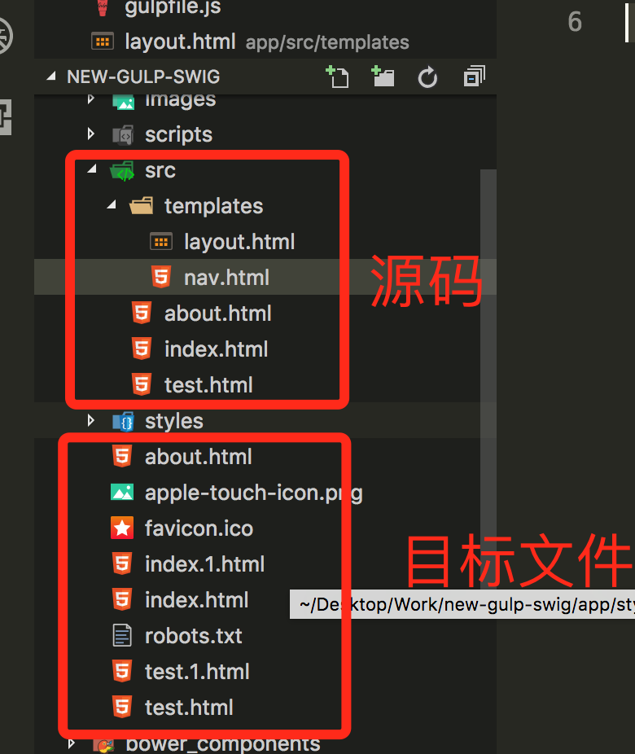

这是首页
源码文件在app》src目录下
模板文件在app》src》templates目录下

- 无侵入：
这种模式不会影响原有的逻辑，不会把问题搞复杂，swig引擎会编译app》src目录下所有文件，导入到app目录下，生成与原gulp项目一模一样的代码，后续按gulp操作即可。
- 源码精简：
这个很明显，每个页面只需要专注当前页面业务，不需要面对那些css，js和一堆无关代码。
- 模块化：
在静态页中实现了模块化开发的概念，嗯，这很神奇有木有。
- 代码具有统一源：
比如项目开发到中途，有50个静态页，现在要统一修改每个页面中相同部分...，现在不需要打开每个文件一个一个修改，只需要修改模板，比如现在修改nav.html,加入一个新的连接，所有页面都会增加，幸福感满满。
你可能会需要的资料：
PS：以前的项目我找不到了，差点想不起来了。可能是我开发spa去了🤣，这种传统的静态多页面基本没怎么碰。